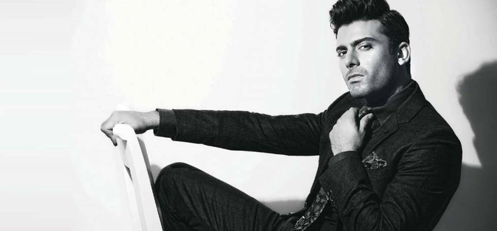

Добро пожаловать на ДОROGO BOGATO!
|
 Бренд свободы и стиля - получивший имя Vaismann начал свое существование в 1996 г. На протяжении всего периода своего существования бренд Vaismann чтит традиции моды, в то же время, давая полную свободу для воплощения даже самых смелых идей. Целью компании бренда Vaismann есть привлечение молодых дизайнеров для воплощения новых и свежих идей |
Торговая марка La Belle – это одежда для привередливых горожанок, зрелых, уверенных в себе и успешных женщин старше тридцати. Их жизнь насыщена деловыми встречами и совещаниями, работой с людьми и с документами. Это не мешает им посещать театры и кино, путешествовать, ходить на корпоративные праздники и дружеские вечеринки. Поэтому в наших коллекциях есть не только деловые костюмы, платья-футляры, классические женские брюки, но и нарядные комплекты и платья для самых разных ситуаций. |